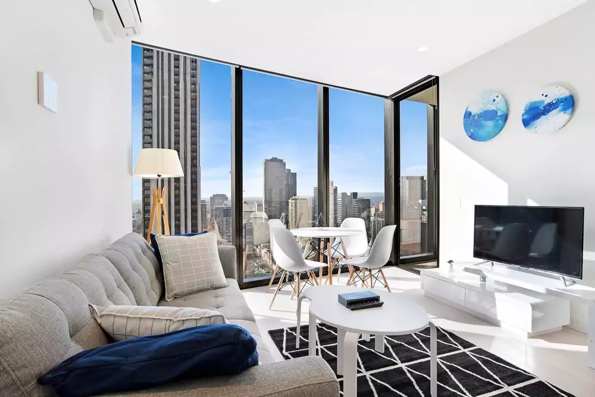
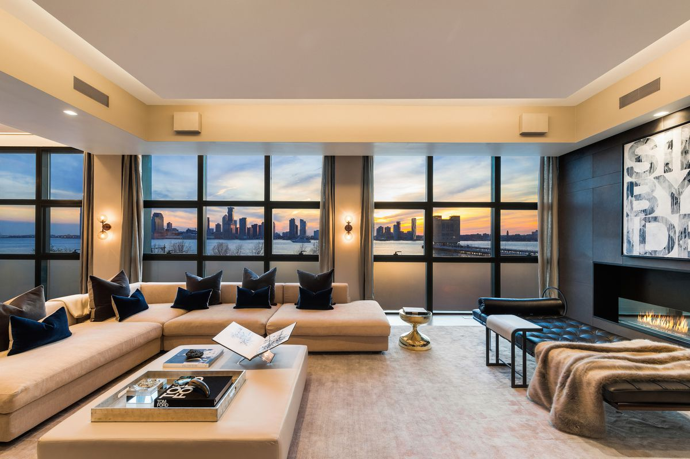
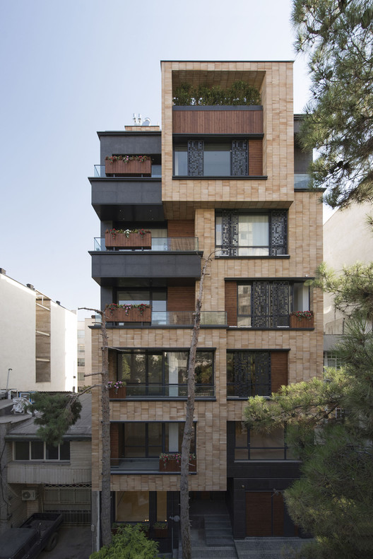
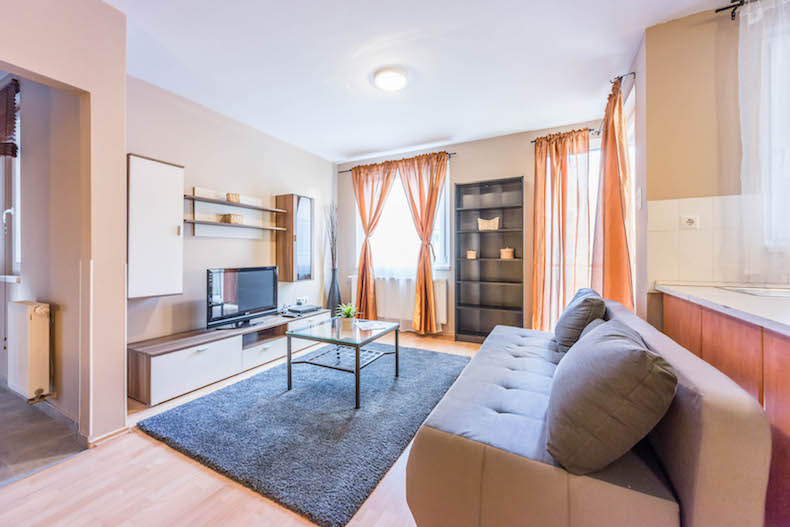

Hepolamminkatu 10
Hämeenkatu 24
Piettasenkatu 33 K 26

Otsikot ja fontit
Otsikoissa käytetään h1, h2 ja h3 elementtejä.
H1 fontti on Arial ja sen pistekoko on 45.
H2 fontti on Arial ja sen pistekoko on 35.
H3 fontti on Arial ja sen pistekoko on 25.
Normaalissa tekstissä fonttina on Times New Roman. Normaalissa tekstissä fontti koko on 14pt.
Header ja Footer
Headerin ja Footerin väri on #7fb8ff.
Headerissä on logo ja navigointi.
Footerissa on yrityksen nimi.
Footer on määritetty fixediksi ja sen width on 100% ja padding on 5px.
Logo
Logossa on käytetty muutamaa yksinkertaista muotoa.
Liikemerkkinä on käytetty ympyrää ja ne on värjätty eriväriseksi.
Yrityksen nimi on kirjoitettu liikemerkin sisään.
Logon koko on määritetty seuraavanlaisesti: width:75px ja height:75px.
Kuvat
Kuvat on sijoitettu sivun reunoille sidenav divin sisälle.
Kuvien koko on: height: 195px ja width: 195px.
Sisältölaatikot
Jokaisella niin sanotulla osa-alueella on oma divi.
Headerin diviin sisältyy navigointi ja logo. Sen gridi on 12.
Footerin diviin sisältyy ainoastaan footerissa oleva teksti. Sen gridi on 12.
Itse sisältö on jaettu muutamaan diviin.
Sivuissa olevat kuvat ovat sidenav divin sisällä ja niiden gridi on 2. Kuvat ovat divin sisällä, jonka class on well ja se aiheuttaa sen että kuvat ovat niin sanotussa laatikossa. Sidenavin taustaväri on valkoinen ja padding-top on 15px.
Keskellä oleva teksti on divin sisällä, jonka gridi on 8.
Painikkeet
Painikkeina toimivat kuvat ja teksti.
Teksti painikkeita käytetään headerissä ja kuva painikkeita headerissä ja sivun reunoilla.
Teksti painikkeiden fontti koko on 15 pistettä ja niiden fontti on Arial.
Kuva painikkeet toimivat siten että kuvaa klikataan ja se ohjaa uudelle sivulle.
Pudotusvalikko
Pudotusvalikko toimii vain pienillä ruuduilla.
Pudotusvalikon koko max-width: 767pxja korkeus on määritetty automaattisesti.
Mäentakusenkatu 14
Piettasenkatu 26
Insinöörinkatu 43
